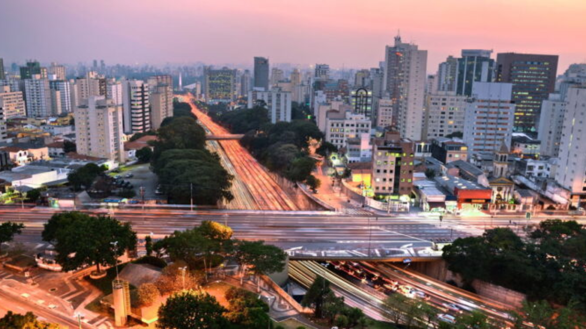
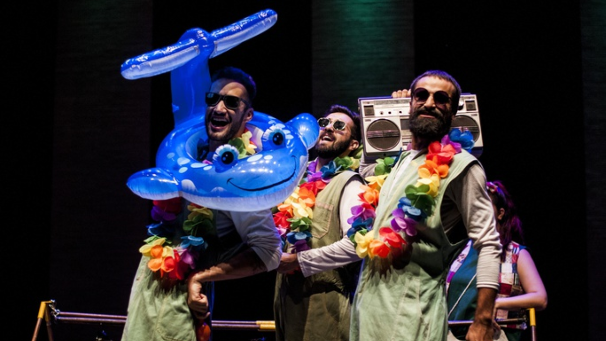
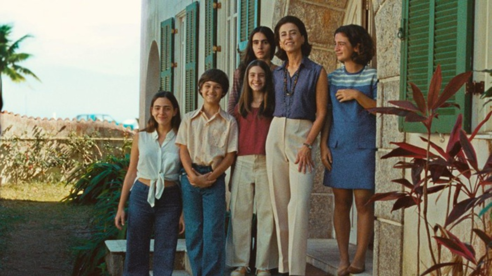

A programação da semana promete agradar a diferentes públicos no Centro Cultural Sesi Ribeirão Preto. As atrações incluem exibições de filmes, shows e um espetáculo teatral para crianças. Os ingressos são gratuitos e estão disponíveis para reserva no site do Sesi Ribeirão.
O dia de Santa Rita de Cássia é celebrado nesta quinta-feira (22) com missas e quermesse na Paróquia Santa Rita de Cássia, no Jardim Independência, em Ribeirão Preto. A entrada é gratuita.

Cidade, que criou sua Film Commission antes do Estado e do Governo Federal, foi citada no Festival de Cannes como potencial locação para produções cinematográficas

Premiado como “Melhor Circo do Brasil”, o espetáculo “Abracadabra” estreia sua temporada em Ribeirão, na sexta-feira (16)